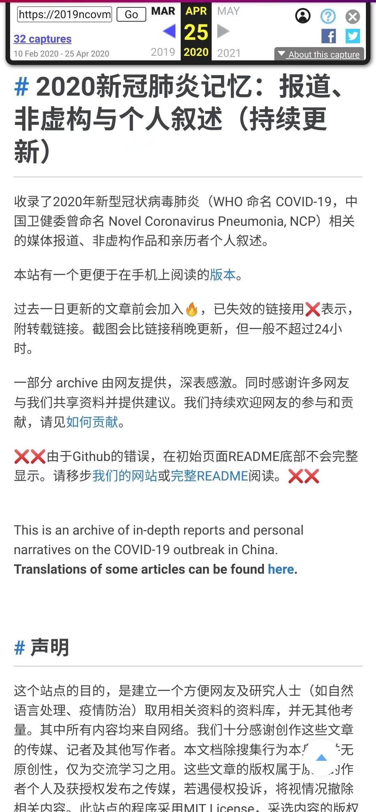
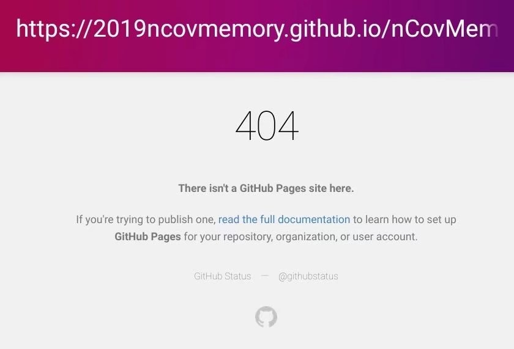

- 2020-04-27 周一
- 评论
有一个夜晚我烧毁了所有的记忆，
从此我的梦就透明了；
有一个早晨我扔掉了所有的昨天，
从此我的脚步就轻盈了。
这是我非常喜欢的一首泰戈尔的一首诗，“烧毁记忆”是一件多么美好的事情，往事所有哀伤、所有沧桑，都不会再影响到你。但是我们有“烧毁记忆”的可能吗？我们是人，不是鱼——况且鱼也远远不止有“7秒的记忆”——一件给我们产生了重大影响的事情，怎么可能随意地任你把记忆“烧毁”呢？
同时，记忆的重量来源于时间的积累和深刻的思考，是构成当下的你的重要组成部分。一个丢失了记忆的人，必定不是一个完整的人；一个没有记忆的人，即使天真欢快，必定缺乏对世界的认知和对人生的思考。
可这首诗我仍然十分喜爱，因为我认为泰戈尔想表达的并不是单纯地忘却记忆，而是“假装忘记”，是一种背负着沉重的记忆却还能以轻盈的步伐前行的开阔的胸襟。
当一切沉重的记忆都被刻意忘却之后，留下的歌功颂德又有什么意义呢？

